- Главная »
- Услуги »
- Металлоконструкции »
- Металлические ограждения
- Металлоконструкции
- Резка металла
- Струйная обработка металла
- Полировка металла до зеркального блеска
- Покраска металла
- Гибка металла
- Сверление отверстий в металле
- Изготовление деталей
- Токарные работы
- Сварка металла
- Производство стальных деталей
- Вальцовка листового металла
- Металлообработка ЧПУ
Металлические ограждения
Временное ограждение строительной площадки
Инвентарные
Цена от 1500 руб.
Материал: сварная сетка
Размер панели (ШхВ), мм: 2500х1600/2500х2000
Размер ячейки (ШхВ), мм: 100х100
Диам. прутков сетки (Гор./Верт), мм: 4/4
Диам. трубы рамы (Гор./Верт), мм: 20/20
К раме приварены крепежные крюки для возможности соединения секций в одну цепь.
Цены на сварные заборы
| Наименование: | Иллюстрация / фотография: | Описание: | Высота: | Цена (руб/м2): |
| Ограждение OC-Т20-00 | 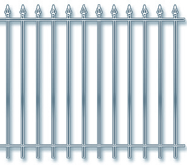 | Основание конструкции состоит из жесткой сварной конструкции и металлического профиля, сечение которого составляет 20x20x1,5 мм. Пики выполнены литьевым способом. | 1600 мм. | 3600 руб. |
| 1600-2200 мм. | 3610 руб. | |||
| Ограждение "OC-Т20-01" | 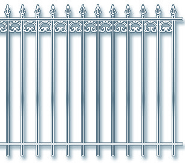 | Основа ограждения - сварная конструкция из металлического профиля сечением 20x20x1,5 мм. Пики сделаны литьевым методом. Элементы декора созданы при помощи машинной ковки. | 1600 мм. | 3900 руб. |
| 1600-2200 мм. | 3600 руб. | |||
| Ограждение "OC-Т20-02" | 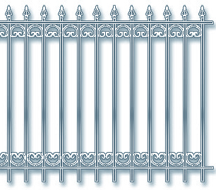 | Сварная конструкция из металлического профиля сечением 20x20x1,5 мм – основа ограждения. Литьевым способом выполнены пики, а декоративные элементы созданы методом машинной ковки. | 1600 мм. | 4500 руб. |
| 1600-2200 мм. | 2700 руб. | |||
| Ограждение "OC-Т20-50" | 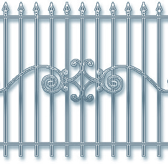 | Основание каркаса ограждения – жесткая сварная конструкция из металлического профиля сечением 20x20x1,5 мм. Наконечные пики созданы при помощи литья, а элементы декора выполнены благодаря машинной ковки. | 1600 мм. | 4000 руб. |
| 1600-2200 мм. | 2900 руб. |
| Наименование: | Иллюстрация / фотография: | Описание: | Габариты: | Цена (руб): |
| Переносное строительное (инвентарное) ограждение «ПО-41» | 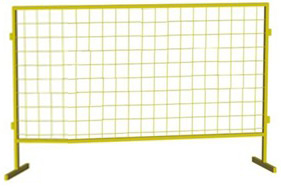 | Указанное строительное мобильное заграждение используется для отделения, в том числе, строительных площадок, а также территорий, на которых ведутся строительные (подготовительные) работы. Применяются в качестве временных барьеров и защитных сооружений временного характера в процессе инженерных работ на коммуникационных сетях. Такое заграждение успешно соединяется между собой в цельную систему, предлагается в нескольких цветовых решениях – красном, зеленом, синем, желтом. |
Проф.труба 20х20х1.5мм. Сетка 100х100х3 мм. | 1300 руб. |
| Проф.труба 20х20х1.5 мм. Сетка 100х100х4 мм. | 1200 руб. | |||
| Проф.труба 20х20х2 мм. Сетка 100х100х4 мм. | 1350 руб. | |||
| Переносное строительное (инвентарное) ограждение «ПО-41.2» | Строительное переносное ограждение «ПО-41.2» имеет уменьшенный размер секции и используется в качестве элемента системы выделения, огораживания, защиты и временной ограды строительных и других площадок, на которых ведутся работы, связанные со строительством, ремонтом, реставрацией или монтажом сетей, оборудования. Часто такой переносной реманент используется для проведения временных работ хозяйствующими субъектами в местах общего использования, в том числе на дорожном полотне, в жилых домах и так далее. Строительные ограждения окрашены защитной порошковой краской, поставляются в разных цветовых решениях – желтый, зеленый, красный, синий. |
Проф.труба 20х20х1.5мм. Сетка 100х100х3 мм. | 1150 руб. | |
| Переносное строительное (инвентарное) ограждение «ПО-32» | 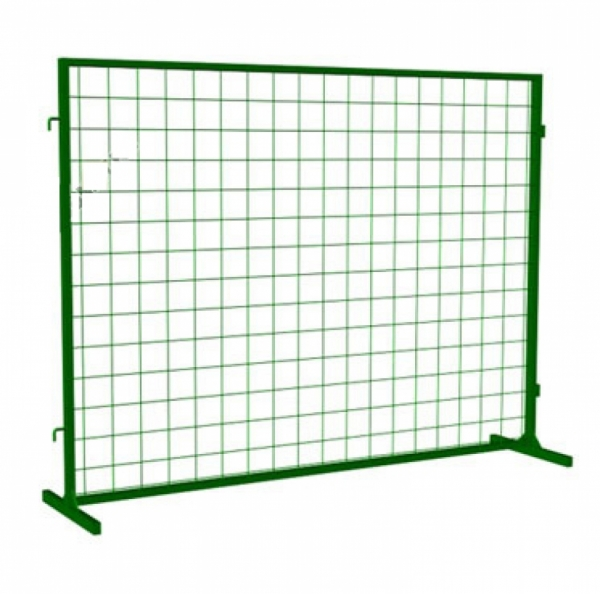 | Строительное ограждение (переносное) «ПО-32» с габаритами 2 метра на 1,6 метров состоит из профилированной трубы и сетки, что делает конструкцию легкой и крайне удобной в переноске. Используется данное ограждение в процессе проведения любых строительных или монтажных работ на опасных для посторонних людей объектах с целью ограждения строительной площадки и безопасности окружающих. Продается указанное ограждение (переносное) «ПО-32» в различных цветах, а именно красном, желтом, синем, зеленом, что позволяет выбрать нужный вариант для решения различных задач в любых погодных условиях, в разное время суток и так далее. |
Проф.труба 20х20х1.5 мм. Сетка 100х100х3 мм. | 1500 руб. |
| Проф. труба 30х20х1.5 мм. Сетка 100х100х3 мм. | 1550 руб. | |||
| Проф. труба 30х20х1.5 мм. Сетка 100х100х4 мм. | 1650 руб. | |||
| Переносное строительное (инвентарное) ограждение «ПО-32.2» | 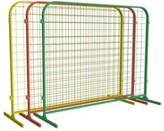 | Строительное переносное ограждение «ПО-32.2» имеет стандартный размер секций – 3 метра на 1,6 метров, используется в качестве элемента системы огораживания, защиты и временной зоны вне доступа строительных площадок. Возможность подобрать сетку из металла разной толщины позволяет уменьшить вес изделия, что значительно упростит работу с ним, если такое потребуется. Дополнительным преимуществом «ПО-32.2» является разнообразие цветов, в которых исполнены и рама, и сетка строительного заграждения: желтый, зеленый, красный и синий. | Проф.труба 20х20х1.5 мм. Сетка 100х100х3 мм. | 1500 руб. |
| Проф. труба 30х20х1.5 мм. Сетка 100х100х3 мм. | 1550 руб. | |||
| Проф. труба 30х20х1.5 мм. Сетка 100х100х4 мм. | 1700 руб. | |||
| Проф. труба 30х20х2 мм. Сетка 100х100х4 мм. | 1900 руб. | |||
| Переносное строительное (инвентарное) ограждение «ПО-31.2» | 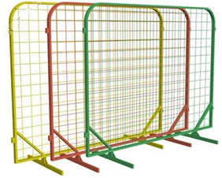 | Указанное строительное переносное ограждение используется для отделения строительных площадок и участков, на которых ведутся строительные и монтажные работы, от случайных прохожих. Ограждение «ПО-31.2» из профильной трубы и сетки применяется в качестве защитных сооружений временного характера в процессе инженерных работ на коммуникационных сетях, в т. ч. ведении строительных работ и прокладки наружных инженерных коммуникаций. Изделие в обязательном порядке окрашено специальной защитной (порошковой) краской, увеличивающей срок его эксплуатации, легко собирается в единую систему ограждения и поставляется клиенту в четырех разных цветовых модификациях: красной, зеленой, синей и желтой. |
Проф. труба 30х20х2 мм. Сетка 100х100х4 мм. | 2010 руб. |
| Переносное строительное (инвентарное) ограждение «ПО-4» | Высококачественное строительное ограждение «ПО-4» из профилированной легкой металлической трубы и металлической сетки (габариты изделия 2 м на 1,6 м) удобно для временной защиты от посторонних строительных площадок и других объектов, на которых ведутся ремонтные или монтажные работы. В качестве защитного элемента самих конструкций используется порошковая краска, уменьшающая воздействие коррозионных процессов, а система крепления позволяет соединить секции в щиты различной длины, ограждающие самые различные объекты. Заказать изделия «ПО-4» – мобильные строительные заграждения – можно в 4-х цветах: желтый, зеленый, красный и синий. |
Проф.труба 30х20х2 мм. Сетка 100х100х4 мм. | 1500 руб. | |
| Строительные ограждения «СВО-10» (на блоки ФБС) |
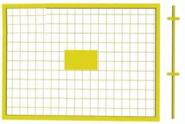 | Строительное ограждение «СВО-10» используется в качестве ограждения территорий, на которых ведутся строительные работы, от проникновения посторонних лиц на объект, а также защиты и безопасности материальных ценностей, находящихся на строительно-монтажных участках от действий третьих лиц. Кроме того, такие защитные ограждения применяются в случае наличия опасных компонентов производства или вредных факторов, способных повлиять на посторонних лиц. Конструкция строительного ограждения «СВО-10» – это сварные секции, которые монтируются на бетонные блоки или более приемлемые основания на основе бетона. Монтаж секций на блок осуществляется с помощью металлической трубы удобного диаметра. |
Секция 2250х1350 мм. Уголок 25х4 мм. Сетка 100х100х4 мм. | 2200 руб. |
| Секция 2250х1350 мм. Уголок 35х4 мм. Сетка 100х100х4 мм. | 2500 руб. | |||
| Секция 2250х1350 мм. Уголок 40х4 мм. Сетка 100х100х4 мм. | 2600 руб. | |||
| Секция 2250х1350 мм. Уголок 45х4 мм. Сетка 100х100х4 мм. | 2800 руб. | |||
| Секция 2250х1350 мм. Уголок 50х5 мм. Сетка 100х100х4 мм. | 3200 руб. | |||
| Строительное (инвентарное) ограждение «ОБ-12» | 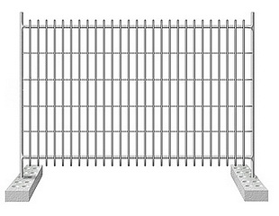 | Строительное ограждение «ОБ-12» используется на практике в целях отделения участков, на которых ведутся/планируются вестись временные строительные или монтажные, а также постоянные производственные работы, включая ремонт систем и коммуникаций. Ограждения формируются в единую систему из многих секций за счет специальных блоков – бетонных конструкций или металлических изделий, в которых имеется специальное отверстие для монтажа. Конечная обработка строительного ограждения «ОБ-12» – горячее цинкование. |
Секция ограждения - сварная конструкция из труб и арматурной сетки d - 5 мм. | 5000 руб. |
| Передвижные парковочные (пешеходные) ограждения «Барьер-П-1» | 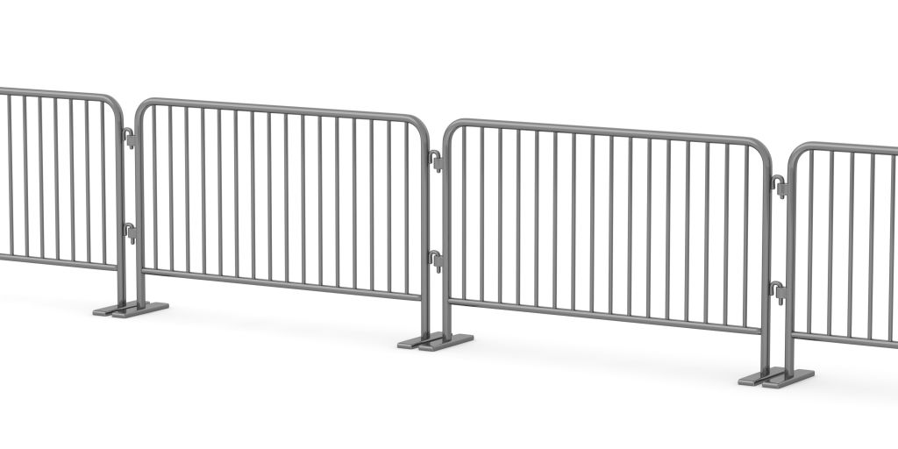 | Парковочное и пешеходное (передвижное) ограждение «Барьер-П-1» используется с целью отделения площадок и территорий, на которых собирается большое количество людей во время проведения различных массовых действий, в т. ч. демонстраций, концертов, празднований. «Барьер-П-1» также весьма удобен в ходе отделения и отгораживания строительных или монтажных работ. В набор входит 6 стоек (вертикальных), за счет которых секции легко монтируются между собой в единую систему, элементы которой скрепляются под различным углом. |
Изготовлено из проф. трубы 25х25х2 мм. | 2900 руб. |
| Передвижные парковочные (пешеходные) ограждения «Барьер-П-2» | 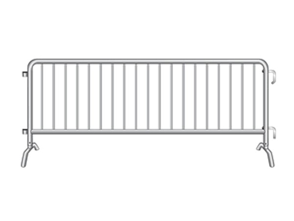 | Парковочное и пешеходное (передвижное) ограждение «Барьер-П-2» изготовлено из профилированной трубы, используется для отделения участков, на которых собирается большое количество людей в ходе проведения различных мероприятий массового характера, а также для отгораживания строительно-монтажных участков. Данная модель является прогрессивным вариантом ранее изготавливаемых ограждений, которая сегодня монтируется в единую цепь с помощью 6-ти вертикальных стоек любой формы и любых размеров под самыми разными углами. Контур ограждения – из целостного профиля. |
Изготовлено из проф. трубы 25х25х2 мм. | 3200 |
| Передвижные парковочные (пешеходные) ограждения «Барьер-П-3» | 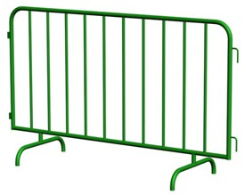 | Парковочное и пешеходное (передвижное) ограждение «Барьер-П-3» – более совершенная модель предыдущих изделий, отличающаяся от ранних версий увеличенным количеством стоек – 10 штук, цельностью конструкции (электросварная труба по всему контуру), а также большей маневренностью в процессе эксплуатации. Ограждение «Барьер-П-3», равно как и предыдущие модели, используется для ограждения мест массового скопления людей, строительных, производственных, монтажных площадок, а также ремонтных работ на коммуникациях. В отличие от предыдущих версий, контур ограждения выполнен с закругленными двумя углами, а соединение секций в систему возможно под любым углом. |
Изготовлено из электросварной трубы диаметр 32мм. по внешненму контуру. Вертикальные стойки из электросварной трубы диаметром 20 мм. | 3000 руб. |
| Передвижные парковочные (пешеходные) ограждения «Барьер-П-5» | 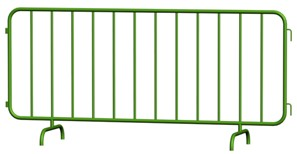 | Парковочное и пешеходное (передвижное) ограждение «Барьер-П-5» – следующая модификация известного строительного и пешеходного заградительного оборудования, которое мобильно используется для решения различных задач в вопросах защиты мест проведения массовых гуляний, мероприятий культурного и развлекательного характера, а также строительно-монтажных участков. Состоит пешеходное (передвижное) ограждение из секции с 10 вертикальными стойками, контур выполнен из электросварной трубы диаметром 32 мм по внешнему контуру. |
Изготовлено из электросварной трубы диаметр 32мм. по внешненму контуру. Вертикальные стойки из электросварной трубы диаметром 20 мм. | 3300 руб. |
| Передвижные парковочные (пешеходные) ограждения «Барьер-П-4» | 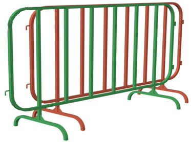 | Парковочное и пешеходное (передвижное) ограждение «Барьер-П-4» – одна из модификаций удобной системы ограждения мест проведения массовых акций, защиты пешеходных переходов, парковочных стоянок, а также строительных или монтажных объектов, особенностью которого является разная высота и длина ножек изделия. Такая разница позволяет монтировать секции в единую систему, используя различные элементы соединения, под самыми различными углами, что не препятствует движению отдельных секций. Ограждение состоит из 10 стоек, контур закруглен. |
Изготовлено из электросварной трубы диаметр 32мм. по внешненму контуру. Вертикальные стойки из электросварной трубы диаметром 20 мм. | 3100 |
| Передвижные парковочные (пешеходные) ограждения «Барьер-П-4.1» | 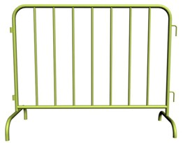 | Парковочное и пешеходное (передвижное) ограждение «Барьер-П-4.1» отличается от аналогичных моделей из серии пешеходных заграждений уменьшенным количеством секций – здесь их 7, а также уменьшенными габаритами – длина 1,5 метра. При этом изделие легко выполняет поставленные цели по ограждению мест проведения демонстраций, пикетов, увеселительных и праздничных мероприятий, строительных работ, монтажных или ремонтных задач. Разница высоты ножек и их длины позволяет быстро и удобно монтировать единые системы ограждения с помощью соединительных элементов под любым углом. |
Изготовлено из электросварной трубы диаметр 32мм. по внешненму контуру. Вертикальные стойки из электросварной трубы диаметром 20 мм. | 2400 |
| Передвижные парковочные (пешеходные) ограждения «Барьер-П-7» |  |
Парковочное и пешеходное (передвижное) ограждение «Барьер-П-7» практично использовать с целью ограждения зон для пешеходов, мест расположения автомобилей на парковочных стоянках, а также, в случае необходимости, ограждения строительных или монтажных участков, в т. ч. на дорогах, коммуникациях, жилых и нежилых объектах. Ограждение состоит из 4 стоек, контур закруглен, при этом изделие может быть дополнительно оснащено специальной табличкой заводского изготовления. Секции между собой могут легко монтироваться в единую систему. |
Изготовлено из проф. трубы 20х20х2 мм. | 1518 руб.+ Информационная табличка "Опасная зона" - 550 руб. |
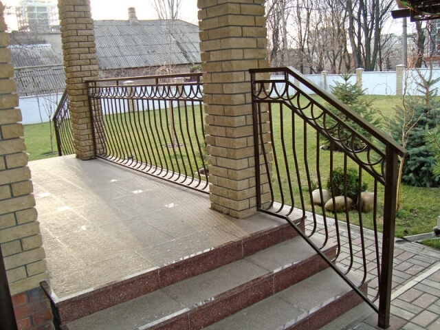
Компания «Металлообработка24» производит и продает качественные металлические ограждения по самым доступным ценам в Москве и области. Работа с металлическими ограждениями – наш конек!
Дизайн лестниц зависит от качества металлических ограждений. Кроме того, металлические перила производства нашей компании станут надежным защитным элементом лестницы и гармонично впишутся в декоративную задумку. Наши специалисты изготовят металлические ограждения любого типа, конфигурации и размера. Например, черные железные перила гармонично подойдут к любому дизайну и подчеркнут любую его деталь.
Виды металлических ограждений
В производстве нашей компании есть два вида перил:
- внутренние,
- наружные.
Каждый вид ограждений обладает своими характеристиками и особенностями. Металлические ограждения предназначены для наружных лестниц, подвергаются атмосферным воздействиям и часто актам вандализма. Поэтому они изготовляются из высокопрочных сплавов, что позволяет повысить защитные функции данных конструкций.
Также для увеличения прочности и привлекательности дизайна используют высокопрочное напыление. Наиболее распространенным выбором клиентов является хромированное напыление с зеркальным отражением. Детально ознакомиться с выполненными проектами металлических конструкций для лестниц вы можете на сайте нашей компании.
Возможности изготовления металлических конструкций
Одним из распространенных материалов для изготовления металлических ограждений для внутреннего применения является сталь. Из стали изготавливаются элементы для балконов, площадок внутри здания и лестничных площадок. Специалисты нашей компании на высоком профессиональном уровне справятся с заказом любой сложности и изготовят ограждения независимо от того, типовой это проект или индивидуальный.
Наши мастера изготовят металлическую лестницу с прерывающимся поручнем, для этого на объект поставляются уже сваренные и покрашенные конструкции, или с непрерывным. В случае применения лестницы с непрерывным поручнем конструкции свариваются и распиливаются в удобном месте стыкования прямо на объекте, а потом увозятся на покраску, после чего производится монтаж на объекте. Ограждение любого типа от нашей компании – это крепкая конструкция из металла с красивым дизайном, подходящим к любому интерьеру здания.
Виды форм поручней
Металлические поручни бывают следующих форм:
- квадратная,
- круглая,
- прямоугольная,
- с закруглениями на концах.
Поручни из металла могут быть установлены на стенах, перилах либо стойках.
Все металлические перила производства нашей компании обладают отличным качеством, высокой долговечностью и износостойкостью. При этом эффективно выполняется соотношение цены и качества. Доступная цена и высокое качество – главные составляющие нашей компании!